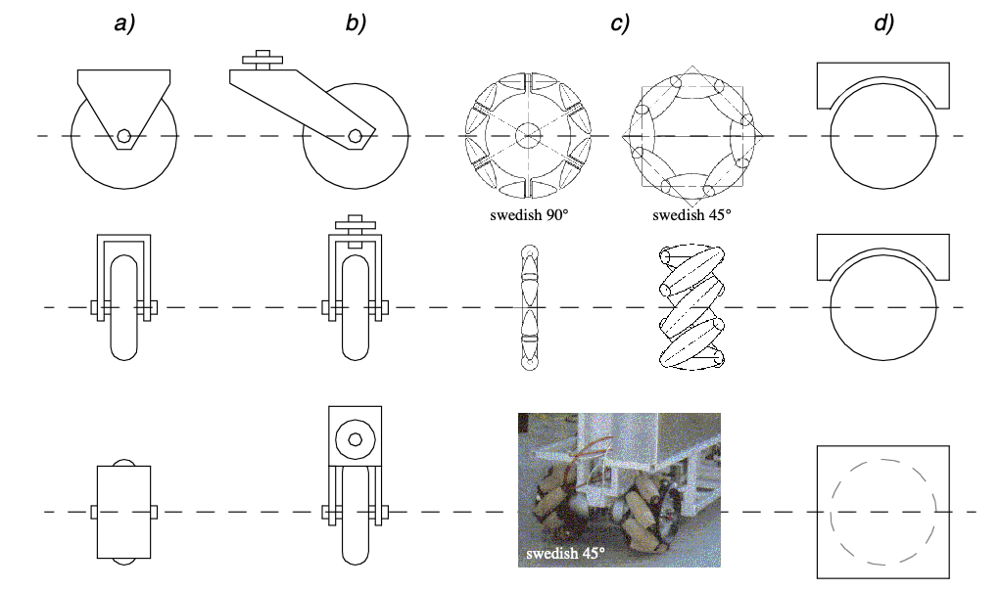
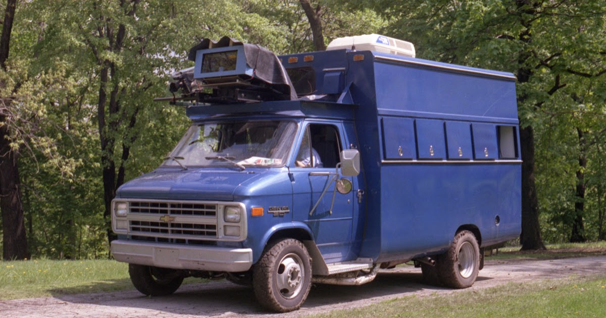
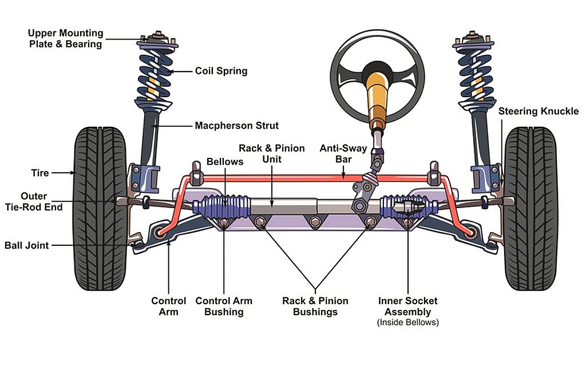

The wheel has been by far the most popular locomotion mechanism in mobile robotics and in man-made vehicles in general. (...) This should be clear as wheel motion is one of the most efficient method of converting energy to motion. It can achieve high efficiencies, as demonstrated in figure 2.3, and does so with a relatively simple mechanical implementation. In addition, balance is not usually a research problem in wheeled robot designs, because wheeled robots are almost always designed so that all wheels are in ground contact at all times.
Therefore,
As we will see, there is a very large space of possible wheel configurations when we considers possible techniques for mobile robot locomotion. We will begin by discussing the wheel in detail, as there are a number of different wheel types with specific strengths and weaknesses. Then, we will examine complete wheel configurations that deliver particular forms of locomotion for a mobile robot.
Wheel Design
There are four (

The standard wheel and the castor wheel have a
The spherical wheel is a truly omnidirectional wheel, often designed so that it may be actively powered to spin along any direction. One mechanism for implementing this spherical design imitates the computer mouse, providing actively powered rollers that rest against the top surface of the sphere and impart rotational force.
Regardless of what wheel is used, in robots designed for all-terrain environments and in robots with
more than three (
Wheel Geometry
The choice of wheel types for a mobile robot is strongly linked to the choice of wheel arrangement, or
wheel geometry. When designing a mobile robot locomotion we must consider these two (
-
maneuverability,
-
controllability
-
stability.
Unlike automobiles, which are largely designed for a highly standardised environment (...) such as the road network, mobile robots are designed for applications in a wide variety of situations. Automobiles all share similar wheel configurations as there is one region in the design space that maximises maneuverability, controllability and stability for their standard environment:
However, there is no single wheel configuration that maximises these qualities for the variety of environments faced by different mobile robots. So, we will see great variety in the wheel configurations of mobile robots. In fact, few robots use the Ackerman wheel configuration of the automobile because of its poor maneuverability, with the exception of mobile robots designed for the road system (figure 2.20).

Table 2.1 gives an overview of wheel configurations ordered by the number of wheels. This table shows both the selection of particular wheel types and their geometric configuration on the robot chassis. Note that some of the configurations shown are of little use in mobile robot applications. For instance, the 2-wheeled bicycle arrangement has moderate maneu- verability and poor controllability. Like a single-leg hopping machine, it can never stand still. Nevertheless, this table provides an indication of the large variety of wheel configura- tions that are possible in mobile robot design.
Surprisingly, the minimum number of wheels required for static stability is two (
Some robots are omnidirectional, meaning that they can move at any time in any direction along the ground plane regardless of the orientation of the robot around its vertical axis. This level of maneuverability requires wheels that can move in more than just a single direction, and so omnidirectional robots usually employ swedish or spherical wheels that are powered. A good example is Uranus, shown in figure 2.24. This robot uses four swedish wheels to rotate and translate independently and without constraints. In general, the ground clearance of robots with swedish and spherical wheels is somewhat limited, due to the mechanical constraints of constructing omnidirectional wheels. An interesting recent solution to the problem of omnidirectional navigation while solving this ground clearance problem is the four castor-wheeled configuration in which each castor wheel is actively steered and actively translated. In this configuration, the robot is truly omnidirectional because, even if the castor wheels are facing a direction perpendicular to the desired direction of travel, the robot can still move in the desired direction by steering these wheels. Because the vertical axis is offset from the ground contact path, the result of this steering motion is robot motion.
In the research community, another classes of mobile robots are popular which achieve high maneuverability, only slightly inferior to that of the omnidirectional configurations. In such robots, motion in a particular direction may initially require a rotational motion. With a cir- cular chassis and an axis of rotation at the center of the robot, such a robot can spin without changing its ground footprint. The most popular such robot is the two-wheel differential drive robot where the two wheels rotate around the center point of the robot. One or two ad- ditional ground contact points may be used for stability, based on the application specifics.
In contrast to the above configurations, consider the Ackerman steering configuration com- mon in automobiles. Such a vehicle typically has a turning diameter that is larger than the car. Furthermore, for such a vehicle to move sideways requires a parking maneuver consist- ing of repeated changes in direction forward and backward. Nevertheless, Ackerman steer- ing geometries have been especially popular in the hobby robotics market, where a robot can be built by starting with a remote-control race car kit and adding sensing and autonomy to the existing mechanism. In addition, the limited maneuverability of Ackerman steering has an important advantage: its directionality and steering geometry provide it with very good lateral stability in high speed turns.

There is generally an
In a differential drive vehicle, the two (
Now let’s describe four (
Synchro Drive
The synchro drive configuration (figure 2.22) is a popular arrangement of wheels in indoor mobile robot applications. It is an interesting configuration because, although there are three driven and steered wheels, only two motors are used in total. The one translation motor sets the speed of all three wheels together, and the one steering motor spins all the wheels together about each of their individual vertical steering axes. But note that the wheels are being steered with respect to the robot chassis, and therefore there is no direct way of re-orienting the robot chassis. In fact, the chassis orientation does drift over time due to uneven tire slippage, causing rotational dead-reckoning error.
Synchro drive is particularly advantageous in cases where omnidirectionality is needed. So long as each vertical steering axis is aligned with the contact path of each tire, the robot can always re-orient its wheels and move along a new trajectory without changing its footprint. Of course, if the robot chassis has directionality and the designers intend to re-orient the chassis purposefully, then synchro drive is only appropriate when combined with an independently rotating turret that attaches to the wheel chassis. Commercial research robots such as the Nomadics 150 or the RWI B21r have been sold with this configuration (figure 1.12). In terms of dead-reckoning, synchro drive systems are generally superior to true omni-directional configurations but inferior to differential drive and Ackerman steering systems. There are two main reasons for this. First and foremost, the translation motor generally drives the three wheels using a single belt. Due to slop and backlash in the drivetrain, whenever the drive motor engages, the closest wheel begins spinning before the furthest wheel, causing a small change in the orientation of the chassis. With additional changes in motor speed, these small angular shifts accumulate to create a large error in orientation during dead-reckoning. Second, the mobile robot has no direct control over the orientation of the chassis. Depending on the orientation of the chassis, the wheel thrust can be highly asymmetric, with two wheels on one side and the third wheel alone, or symmetric, with one wheel on each side and one wheel straight ahead or behind, as shown in (2.22). The asymmetric cases results in a variety of errors when tire-ground slippage can occur, again causing errors in dead-reckoning of robot orientation.
Omnidirectional Drive
As we will see later, omni-directional movement is of great interest for complete manoeuvrability. Omnidirectional robots which are able to move in any direction () at any time are also holonomic. They can be realized by either using spheric, castor or swedish wheels.
Let’s look at these three examples:
Omnidirectional locomotion with three spheric wheels The omnidirectional robot depicted in figure 2.23 is based on three spheric wheels, each actuated by one motor. In this design, the spheric wheels are suspended by three contact points, two given by spherical bearings and one by the a wheel connected to the motor axle. This concept provides excellent maneuverability and is simple in design. However, it is limited to flat surfaces and small loads, and it is quite difficult to find round wheels with high friction coefficients
Omnidirectional locomotion with four swedish wheels The omnidirectional arrangement depicted in figure 2.24 has been used successfully on several research robots, including the CMU Uranus. This configuration consists of four swedish 45 degree wheels, each driven by a separate motor. By varying the direction of rotation and relative speeds of the four wheels, the robot can be moved along any trajectory in the plane and, even more impressively, can simultaneously spin around its vertical axis. For example, when all four wheels spin "forward" or "backward", the robot as a whole moves in a straight line forward and backward, respectively. However, when one diagonal pair of wheels is spun in the same direction and the other diagonal pair is spun in the opposite direction, the robot moves laterally. This four-wheel arrangement of swedish wheels is not minimal in terms of control motors. Because there are only 3 degrees of freedom in the plane, one can build a three-wheeled om- nidirectional robot chassis using three swedish 90 degree wheels as shown in Table 2.1. However, existing examples such as Uranus have been designed with four wheels due to ca- pacity and stability considerations. One application for which such omnidirectional designs are particular amenable is mobile manipulation. In this case, it is desirable to reduce the degrees of freedom of the manipulator arm to save arm mass by using the mobile robot chassis motion for gross motion. As with humans, it would be ideal if the base could move omnidirectionally without greatly impact-
Omnidirectional locomotion with four castor wheels and eight motors Another solution for omnidirectionality is to use castor wheels. This is done for the Nomad XR4000 form Nomadics (fig. 2.25) giving it an excellent maneuverability. Unfortunately Nomadics Technology has ceased the production of mobile robots. The above two examples are drawn from Table 2.1, but this is not an exhaustive list of all wheeled locomotion techniques. Hybrid approaches that combine legged and wheeled loco- motion, or tracked and wheeled locomotion, can also offer particular advantages. Below are two unique designs created for specialized applications.
Tracked Slip/Skid Locomotion
In the wheel configurations discussed above, we have made the assumption that wheels are not allowed to skid against the surface. An alternative form of steering, termed slip/skid, may be used to re-orient the robot by spinning wheels that are facing the same direction at different speeds or in opposite directions. The army tank operates this way, and Nanokhod, pictured below (figure 2.26) is an example of a mobile robot based on the same concept. Robots that make use of tread have much larger ground contact patches, and this can signif- icantly improve their maneuverability in loose terrain compared to conventional wheeled designs. However, due to this large ground contact patch, changing the orientation of the ro- bot usually requires a skidding turn, wherein a large portion of the track must slide against the terrain. The disadvantage of such configurations is coupled to the slip/skid steering. Because of the large amount of skidding during a turn, the exact center of rotation of the robot is hard to predict and the exact change in position and orientation is also subject to variations depend- ing on the ground friction. Therefore, dead-reckoning on such robots is highly inaccurate. This is the trade-off that is made in return for extremely good maneuverability and traction over rough and loose terrain. Furthermore, a slip/skid approach on a high-friction surface can quickly overcome the torque capabilities of the motors being used. In terms of power efficiency, this approach is reasonably efficient on loose terrain but extremely inefficient otherwise.
Walking robots might offer the best maneuverability in rough terrain. However, they are in- efficient on flat ground and need sophisticated control. Hybrid solutions, combining the adaptability of legs with the efficiency of wheels offer an interesting compromise. Solutions that passively adapt to the terrain are of particular interest for field and space robotics. The Sojourner robot of NASA/JPL (fig. 1.2) represents such a hybrid solution, able to overcome objects up to the size of the wheels. A more advanced mobile robot design for similar appli- cations has recently been produced by EPFL (fig. 2.27). This robot, called Shrimp2, has 6 motorized wheels and is capable of climbing objects up to two times its wheel diameter [84,85]. This enables it to climb regular stairs though the robot is even smaller than the So- journer. Using a rhombus configuration, the Shrimp has a steering wheel in the front and the rear, and two wheels arranged on a bogy on each side. The front wheel has a spring suspen- sion to guarantee optimal ground contact of all wheels at any time. The steering of the rover is realized by synchronizing the steering of the front and rear wheels and the speed differ- ence of the bogy wheels. This allows for high precision maneuvers and turning on the spot with minimum slip/skid of the four center wheels. The use of parallel articulations for the front wheel and the bogies creates a virtual center of rotation at the level of the wheel axis. This ensures maximum stability and climbing abilities even for very low friction coeffi- cients between the wheel and the ground. As mobile robotics research matures we find ourselves able to design more intricate me- chanical systems. At the same time, the control problems of inverse kinematics and dynam2 Locomotion 37 R. Siegwart, EPFL, Illah Nourbakhsh, CMU ics are now so readily conquered that these complex mechanics can in general be controlled. So, in the near future, you should expect to see a great number of unique, hybrid mobile ro- bots that draw together advantages from several of the underlying locomotion mechanisms that we have discussed in this chapter. They will each be technologically impressive, and each will be designed as the expert robot for its particular environmental niche.
References
- 1.
-
Bulliet, R. W. The wheel: inventions and reinventions (Columbia University Press, 2016).
- 2.
-
Siegwart, R., Nourbakhsh, I. R. & Scaramuzza, D. Introduction to autonomous mobile robots (MIT press, 2011).
- 3.
-
LaBarbera, M. Why the wheels won’t go. The American Naturalist 121, 395–408 (1983).
- 4.
-
Vincent, J. F., Bogatyreva, O. A., Bogatyrev, N. R., Bowyer, A. & Pahl, A.-K. Biomimetics: its practice and theory. Journal of the Royal Society Interface 3, 471–482 (2006).
- 5.
-
Druelle, F., Abourachid, A., Vasilopoulou-Kampitsi, M. & Aerts, P. Convergence of bipedal locomotion: why walk or run on only two legs in Convergent Evolution: Animal Form and Function 431–476 (Springer, 2023).
- 6.
-
Lyons, D. M. & Pamnany, K. Rotational legged locomotion in ICAR’05. Proceedings., 12th International Conference on Advanced Robotics, 2005. (2005), 223–228.
- 7.
-
Schweitzer, G. ROBOTRAC-a Mobile Manipulator Platform for Rough Terrain in Proc. of Int. Symp. on Advanced Robot Technology (1991), 411–416.
- 8.
-
Thor, M. et al. A dung beetle-inspired robotic model and its distributed sensor-driven control for walking and ball rolling. Artificial Life and Robotics 23, 435–443 (2018).
- 9.
- 10.
-
Photography, S. Common ostrich (Struthio camelus australis) male running (composite image), Damaraland, Namibia 2018.
- 11.
- 12.
- 13.
-
Song, Z., Hou, B., Ji, Z. & Jiang, G. The Impact of Exercise Play on the Biomechanical Characteristics of Single-Leg Jumping in 5-to 6-Year-Old Preschool Children. Sensors 25, 422 (2025).
- 14.
-
Böttcher, S. Principles of robot locomotion in Proceedings of human robot interaction seminar (2006).
- 15.
-
Krzywinski, A., Niedbalska, A. & Twardowski, L. Growth and development of hand reared fallow deer fawns. Acta theriologica 29, 349–356 (1984).
- 16.
-
Brackenbury, J. Caterpillar kinematics. Nature 390, 453–453 (1997).
- 17.
-
Winter, D. A. Biomechanics and motor control of human gait: normal, elderly and pathological (1991).
- 18.
-
Lacquaniti, F., Ivanenko, Y. P. & Zago, M. Patterned control of human locomotion. The Journal of physiology 590, 2189–2199 (2012).
- 19.
-
Pons, J. L. Wearable robots: biomechatronic exoskeletons (John Wiley & Sons, 2008).
- 20.
-
Zyhowski, W. P., Zill, S. N. & Szczecinski, N. S. Adaptive load feedback robustly signals force dynamics in robotic model of Carausius morosus stepping. Frontiers in Neurorobotics 17, 1125171 (2023).
- 21.
-
Lee, H. & Hogan, N. Investigation of human ankle mechanical impedance during locomotion using a wearable ankle robot in 2013 IEEE International Conference on Robotics and Automation (2013), 2651–2656.
- 22.
-
Alexander, R. M. Optimization and gaits in the locomotion of vertebrates. Physiological reviews 69, 1199–1227 (1989).
- 23.
- 24.
-
Murthy, S. S. & Raibert, M. H. 3D balance in legged locomotion: modeling and simulation for the one-legged case. ACM SIGGRAPH Computer Graphics 18, 27–27 (1984).
- 25.
-
Raibert, M. H., Brown Jr, H. B. & Chepponis, M. Experiments in balance with a 3D one-legged hopping machine. The International Journal of Robotics Research 3, 75–92 (1984).
- 26.
- 27.
-
Brown, B. & Zeglin, G. The bow leg hopping robot in Proceedings. 1998 IEEE International Conference on Robotics and Automation (Cat. No. 98CH36146) 1 (1998), 781–786.
- 28.
-
Ringrose, R. Self-stabilizing running in Proceedings of International Conference on Robotics and Automation 1 (1997), 487–493.
- 29.
- 30.
-
Erland, I. B. Rad fuer ein laufstabiles, selbstfahrendes fahrzeug. German Patent No. DE2354404A1 (1974).
-
Dowling, K. et al. NAVLAB An Autonomous Navigation Testbed in Vision and Navigation: The Carnegie Mellon Navlab 259–282 (Springer, 1990).
- 32.
- 33.
-
Farnell. Rotary Encoder, Module, Optical, Incremental, 500 PPR, 0 Detents, Vertical, Without Push Switch 2025.
- 34.
-
Flyrobo. GY-26 Digital Electronic Compass Sensor Module 2025.
- 35.
-
FindLight. Optical Gyroscopes: Measuring Rotational Changes With Sagnac Effect 2025.
- 36.
-
Speakes, L. M. Statement by Deputy Press Secretary Speakes on the Soviet Attack on a Korean Civilian Airliner. Ronald Reagan Presidential Library, September 16 (1983).
- 37.
-
PiHut. HC-SR04 Ultrasonic Range Sensor on the Raspberry Pi 2025.
- 38.
-
Reinhold. Structured light sources on display at the 2014 Machine Vision Show in Boston. 2014.
- 39.
-
Andrzej. CCD image sensor SONY ICX493AQA 10,14 (Gross 10,75) M pixels APS-C 1.8" 28.328mm (23.4 x 15.6 mm) from module IS-026 from digital camera SONY DSLR-A200 or DSLR-A300 sensor side 2014.
- 40.
-
TeledyneCCD. How a Charge Coupled Device (CCD) Image Sensor Works 2020.
- 41.
-
Hirakawa, K. & Parks, T. Chromatic adaptation and white-balance problem in IEEE International Conference on Image Processing 2005 3 (2005), III–984.
- 42.
-
Fstoppers. Is There a Difference Between Color Temperature and White Balance? 2022.
- 43.
-
Ilie, A. & Welch, G. Ensuring color consistency across multiple cameras in Tenth IEEE International Conference on Computer Vision (ICCV’05) Volume 1 2 (2005), 1268–1275.
- 44.
- 45.
-
Zhang, Z. et al. Analysis and simulation to excessive saturation effect of CCD in 2nd International Symposium on Laser Interaction with Matter (LIMIS 2012) 8796 (2013), 96–102.
- 46.
-
Baumer. Operating principle and features of CMOS sensors 2025.
- 47.
- 48.
-
Holst, T. & Lomheim, G. CMOS/CCD Sensors (JCD publishing, 2007).
- 49.
- 50.
- 51.
-
Nourbakhsh, I. R., Andre, D., Tomasi, C. & Genesereth, M. R. Mobile robot obstacle avoidance via depth from focus. Robotics and Autonomous Systems 22, 151–158 (1997).
- 52.
-
Deselaers, T., Keysers, D. & Ney, H. Features for image retrieval: an experimental comparison. Information retrieval 11, 77–107 (2008).
- 53.
-
Boros, E. Targeting a Practical Approach for Robot Vision with Ensembles of Visual Features in 2012 Imperial College Computing Student Workshop (2012), 22–28.
- 54.
- 55.
-
Bailey, T. Mobile robot localisation and mapping in extensive outdoor environments PhD thesis (Citeseer, 2002).
- 56.
-
Campbell, S. et al. Where am I? Localization techniques for mobile robots a review in 2020 6th International Conference on Mechatronics and Robotics Engineering (ICMRE) (2020), 43–47.
- 57.
-
Hodge, V. J. Sensors and data in mobile robotics for localisation. Encyclopedia of Data Science and Machine Learning, 2223–2238 (2023).
- 58.
-
Jaradat, O., Sljivo, I., Habli, I. & Hawkins, R. Challenges of safety assurance for industry 4.0 in 2017 13th European Dependable Computing Conference (EDCC) (2017), 103–106.
- 59.
-
Filliat, D. & Meyer, J.-A. Map-based navigation in mobile robots:: I. a review of localization strategies. Cognitive systems research 4, 243–282 (2003).
- 60.
-
Leonard, J. J. & Durrant-Whyte, H. F. Directed sonar sensing for mobile robot navigation (Springer Science & Business Media, 2012).
- 61.
-
Wing, M. G., Eklund, A. & Kellogg, L. D. Consumer-grade global positioning system (GPS) accuracy and reliability. Journal of forestry 103, 169–173 (2005).
- 62.
-
Bellotto, N. & Hu, H. People tracking and identification with a mobile robot in 2007 International Conference on Mechatronics and Automation (2007), 3565–3570.
- 63.
-
Sridharan, M. & Stone, P. Color learning and illumination invariance on mobile robots: A survey. Robotics and Autonomous Systems 57, 629–644 (2009).
- 64.
-
Galar, D. & Kumar, U. Chapter 1 - Sensors and Data Acquisition in eMaintenance (eds Galar, D. & Kumar, U.) 1–72 (Academic Press, 2017).
- 65.
-
Williams, D. R. Aliasing in human foveal vision. Vision research 25, 195–205 (1985).
- 66.
- 67.
-
Blumrosen, G., Fishman, B. & Yovel, Y. Noncontact wideband sonar for human activity detection and classification. IEEE Sensors Journal 14, 4043–4054 (2014).
- 68.
-
Sabatini, A. M. & Colla, V. A method for sonar based recognition of walking people. Robotics and Autonomous Systems 25, 117–126 (1998).
- 69.
-
Batavia, P. H. & Nourbakhsh, I. Path planning for the Cye personal robot in Proceedings. 2000 IEEE/RSJ International Conference on Intelligent Robots and Systems (IROS 2000)(Cat. No. 00CH37113) 1 (2000), 15–20.
- 70.
- 71.
-
Reuter, J. Scan-and featurebased multiple hypothesis tracking for mobile robot localization: a data fusion approach in IEEE SMC’99 Conference Proceedings. 1999 IEEE International Conference on Systems, Man, and Cybernetics (Cat. No. 99CH37028) 4 (1999), 714–719.
- 72.
-
Fankhauser, P., Bloesch, M. & Hutter, M. Probabilistic terrain mapping for mobile robots with uncertain localization. IEEE Robotics and Automation Letters 3, 3019–3026 (2018).
- 73.
- 74.
-
Brock, O. & Khatib, O. High-speed navigation using the global dynamic window approach in Proceedings 1999 ieee international conference on robotics and automation (Cat. No. 99CH36288C) 1 (1999), 341–346.
- 75.
-
Borenstein, J & Koren, Y. Fast obstacle avoidance for mobile robots. IEEE Trans Rob Autom. v7, 278–287.
- 76.
-
Brooks, R. A robust layered control system for a mobile robot. IEEE journal on robotics and automation 2, 14–23 (1986).
- 77.
-
Nourbakhsh, I., Powers, R. & Birchfield, S. DERVISH an office-navigating robot. AI magazine 16, 53–53 (1995).
- 78.
-
Wang, F. et al. Object-based reliable visual navigation for mobile robot. Sensors 22, 2387 (2022).
- 79.
-
AaaravG. How to Make Line Follower Robot Using Arduino 2018.
- 80.
-
McNamara, T. P., Hardy, J. K. & Hirtle, S. C. Subjective hierarchies in spatial memory. Journal of Experimental Psychology: Learning, Memory, and Cognition 15, 211 (1989).
- 81.
-
Chun, M. M. & Jiang, Y. Contextual cueing: Implicit learning and memory of visual context guides spatial attention. Cognitive psychology 36, 28–71 (1998).
- 82.
-
Huang, C., Mees, O., Zeng, A. & Burgard, W. Visual language maps for robot navigation in 2023 IEEE International Conference on Robotics and Automation (ICRA) (2023), 10608–10615.
- 83.
-
Meyer-Delius, D., Beinhofer, M., Kleiner, A. & Burgard, W. Using artificial landmarks to reduce the ambiguity in the environment of a mobile robot in 2011 IEEE International Conference on Robotics and Automation (2011), 5173–5178.
- 84.
-
Hazik, J., Dekan, M., Beno, P. & Duchon, F. Fleet management system for an industry environment. Journal of Robotics and Control (JRC) 3, 779–789 (2022).
- 85.
-
Xidias, E., Zacharia, P. & Nearchou, A. Intelligent fleet management of autonomous vehicles for city logistics. Applied Intelligence 52, 18030–18048 (2022).
- 86.
-
Kivaan. An official DARPA photograph of Stanley at the 2005 DARPA Grand Challenge. 2007.
- 87.
-
Hashimoto, S. et al. Humanoid robots in waseda university–hadaly-2 and wabian. Autonomous Robots 12, 25–38 (2002).
- 88.
-
Carroll, R. J. & Ruppert, D. Transformation and weighting in regression (Chapman and Hall/CRC, 2017).
- 89.
-
Bruce, J., Balch, T. & Veloso, M. Fast and inexpensive color image segmentation for interactive robots in Proceedings. 2000 IEEE/RSJ International Conference on Intelligent Robots and Systems (IROS 2000)(Cat. No. 00CH37113) 3 (2000), 2061–2066.
- 90.
-
Manske. Hughes Letter-Printing Telegraph Set built by Siemens and Halske in Saint Petersburg, Russia, ca.1900 2009.
- 91.
-
Koren, O. A study of the Linux kernel evolution. ACM SIGOPS Operating Systems Review 40, 110–112 (2006).
- 92.
-
Bach, M. J. The Design of the UNIX. RTM. Operating system Prentice Hall, 312–329 (1986).
- 93.
-
Johnson, S. C. & Ritchie, D. M. UNIX time-sharing system: Portability of C programs and the UNIX system. The Bell System Technical Journal 57, 2021–2048 (1978).
- 94.
- 95.